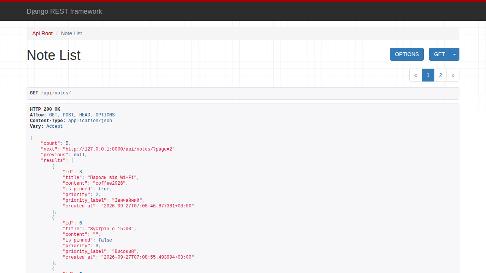

Урок 35. DRF overview + Django vs FastAPI¶
У застосунку нотаток з уроку 33 є сторінки для людей і адмінка. Але нотатки потрібні й програмам: мобільному застосунку, Streamlit-дашборду, Telegram-боту (урок 47). Їм не потрібен HTML — їм потрібен JSON і REST API, як у метео-сервісу з уроку 32.
Писати API на «голому» Django можна, але довелося б самому перетворювати моделі на JSON, розбирати тіло запиту, перевіряти дані, повертати правильні коди. Усе це вже зроблено в Django REST Framework (DRF) — найпопулярнішому пакеті для API на Django. Сьогодні додамо API до нотаток, а наприкінці порівняємо Django + DRF із FastAPI, на якому ми писали Meteo API.
Що потрібно з попередніх уроків: Django-проєкт hello_project, модель Note, ORM, адмінка (урок 33), REST: ресурси, методи, коди, пагінація (урок 32), requests і curl (урок 31).
Після уроку ти зможеш:
- підключити DRF до Django-проєкту й налаштувати його в
settings.py; - описати серіалізатор: модель ↔ JSON, валідація вхідних даних, поля лише для читання;
- побудувати CRUD API на
ModelViewSetі роутері, з пагінацією, фільтрами й власною дією; - обмежити запис автентифікованим користувачам;
- отримати OpenAPI-схему API;
- порівняти Django + DRF і FastAPI і обрати інструмент під задачу.
Задача розділу. API нотаток /api/notes/: список, фільтри, створення, зміна, видалення, «закріпити». Повний приклад — у розділі «Практика».
Ноутбук заняття: note_lesson_35_drf.ipynb  — серіалізатори й API з перевірками прямо в ноутбуці.
— серіалізатори й API з перевірками прямо в ноутбуці.
Місце в системі
Це продовження проєкту hello_project з уроку 33 — застосунку нотаток, що виросте до Notes Chat App. Поглиблено — глава Django-книги REST API: Django REST Framework: як DRF працює всередині, і API для самого Notes Chat App поверх його selectors і services — з Input/Output-серіалізаторами й захистом від доступу до чужих нотаток. Архітектура серіалізаторів — глава Serializers — Transport Layer.
Пригадай¶
- Який код повертає REST API, коли створено ресурс? Коли дані не пройшли перевірку (урок 32)?
- Що повертає
Note.objects.filter(...)і коли йде запит у базу (урок 33)? - Чим
PATCHвідрізняється відPUT?
Відповіді
201 Created(+Location). Для неправильних даних у Meteo API був422; DRF за замовчуванням повертає400 Bad Request— обидва варіанти поширені, головне — однаково в усьому API.- Лінивий QuerySet; SQL іде, коли потрібні дані.
PATCHзмінює передані поля,PUTзамінює ресурс цілком.
Підключення DRF¶
Беремо проєкт з уроку 33 і встановлюємо два пакети: сам DRF і drf-spectacular — генератор OpenAPI-схеми:
$ python -c "import rest_framework, drf_spectacular; print(rest_framework.VERSION, drf_spectacular.__version__)"
3.18.1 0.30.0
Обидва — Django-застосунки, тож додаємо їх в INSTALLED_APPS, а налаштування DRF збираємо в одному словнику REST_FRAMEWORK:
INSTALLED_APPS = [
"django.contrib.admin",
"django.contrib.auth",
"django.contrib.contenttypes",
"django.contrib.sessions",
"django.contrib.messages",
"django.contrib.staticfiles",
"rest_framework",
"drf_spectacular",
"hello_app",
]
REST_FRAMEWORK = {
"DEFAULT_PAGINATION_CLASS": "rest_framework.pagination.PageNumberPagination",
"PAGE_SIZE": 3,
"DEFAULT_AUTHENTICATION_CLASSES": [
"rest_framework.authentication.SessionAuthentication",
"rest_framework.authentication.BasicAuthentication",
],
"DEFAULT_PERMISSION_CLASSES": ["rest_framework.permissions.IsAuthenticatedOrReadOnly"],
"DEFAULT_SCHEMA_CLASS": "drf_spectacular.openapi.AutoSchema",
}
SPECTACULAR_SETTINGS = {"TITLE": "Notes API", "VERSION": "1.0.0"}
| Налаштування | Що дає |
|---|---|
PageNumberPagination, PAGE_SIZE: 3 |
кожен список — сторінками по 3 записи: ?page=2 |
SessionAuthentication |
вхід через сесію браузера — як в адмінці |
BasicAuthentication |
логін і пароль у заголовку Authorization — зручно для curl (у production — лише через HTTPS, а частіше токени, урок 40) |
IsAuthenticatedOrReadOnly |
читати може будь-хто, змінювати — лише користувач, що увійшов |
AutoSchema від drf-spectacular |
OpenAPI-схема з коду, як у FastAPI |
Створимо базу з міграцій уроку 33, суперкористувача і кілька нотаток:
$ python manage.py migrate
Operations to perform:
Apply all migrations: admin, auth, contenttypes, hello_app, sessions
Running migrations:
Applying contenttypes.0001_initial... OK
Applying auth.0001_initial... OK
Applying admin.0001_initial... OK
Applying admin.0002_logentry_remove_auto_add... OK
Applying admin.0003_logentry_add_action_flag_choices... OK
Applying contenttypes.0002_remove_content_type_name... OK
Applying auth.0002_alter_permission_name_max_length... OK
Applying auth.0003_alter_user_email_max_length... OK
Applying auth.0004_alter_user_username_opts... OK
Applying auth.0005_alter_user_last_login_null... OK
Applying auth.0006_require_contenttypes_0002... OK
Applying auth.0007_alter_validators_add_error_messages... OK
Applying auth.0008_alter_user_username_max_length... OK
Applying auth.0009_alter_user_last_name_max_length... OK
Applying auth.0010_alter_group_name_max_length... OK
Applying auth.0011_update_proxy_permissions... OK
Applying auth.0012_alter_user_first_name_max_length... OK
Applying hello_app.0001_initial... OK
Applying hello_app.0002_alter_note_options_note_is_pinned... OK
Applying hello_app.0003_note_priority... OK
Applying sessions.0001_initial... OK
$ python manage.py createsuperuser --noinput --username admin --email admin@example.com
Superuser created successfully.
from hello_app.models import Note
Note.objects.create(title="Купити молоко", content="2 л")
Note.objects.create(title="Вивчити DRF", content="serializers, viewsets", priority=3)
Note.objects.create(title="Пароль від Wi-Fi", content="coffee2026", is_pinned=True)
Note.objects.create(title="Ідея: бот для нотаток", priority=1)
print(Note.objects.count())
Серіалізатор: модель ↔ JSON¶
Серіалізатор робить дві роботи:
- серіалізація — об'єкт моделі → словник → JSON для відповіді;
- десеріалізація — JSON із запиту → перевірка → дані для збереження в модель.
ModelSerializer бере поля й обмеження прямо з моделі — як ModelForm для HTML-форм (урок 34):
from rest_framework import serializers
from .models import Note
class NoteSerializer(serializers.ModelSerializer):
priority_label = serializers.CharField(source="get_priority_display", read_only=True)
class Meta:
model = Note
fields = ["id", "title", "content", "is_pinned", "priority", "priority_label", "created_at"]
read_only_fields = ["id", "created_at"]
def validate_title(self, value):
value = value.strip()
if len(value) < 3:
raise serializers.ValidationError("Заголовок має містити щонайменше 3 символи.")
return value
fields— явний список полів у JSON. Що не в списку — не потрапить у відповідь і не прийметься із запиту.read_only_fields— поля лише для відповіді:idі час створення клієнт не задає.priority_label— обчислене поле:sourceвказує на метод моделіget_priority_display()(урок 33).validate_<поле>— власна перевірка одного поля; повертає очищене значення.
Спробуємо в python manage.py shell. Серіалізація:
from hello_app.models import Note
from hello_app.serializers import NoteSerializer
note = Note.objects.get(title="Вивчити DRF")
data = NoteSerializer(note).data
print(data)
print(NoteSerializer(Note.objects.filter(is_pinned=True), many=True).data)
Приклад виводу (час created_at у тебе інший):
{'id': 2, 'title': 'Вивчити DRF', 'content': 'serializers, viewsets', 'is_pinned': False, 'priority': 3, 'priority_label': 'Високий', 'created_at': '2026-09-27T07:08:46.876031+03:00'}
[{'id': 3, 'title': 'Пароль від Wi-Fi', 'content': 'coffee2026', 'is_pinned': True, 'priority': 2, 'priority_label': 'Звичайний', 'created_at': '2026-09-27T07:08:46.877381+03:00'}]
many=True — серіалізувати колекцію (QuerySet або список). Результат — звичайні словники, які DRF перетворить на JSON.
Десеріалізація і валідація — спершу is_valid(), лише потім save():
good = NoteSerializer(data={"title": " Прочитати про REST ", "priority": 4, "id": 999})
print(good.is_valid(), good.validated_data)
created = good.save()
print(created.id, repr(created.title), created.get_priority_display())
bad = NoteSerializer(data={"title": "ok", "priority": 7})
print(bad.is_valid())
print(bad.errors)
True {'title': 'Прочитати про REST', 'priority': 4}
5 'Прочитати про REST' Терміновий
False
{'title': [ErrorDetail(string='Заголовок має містити щонайменше 3 символи.', code='invalid')], 'priority': [ErrorDetail(string='"7" не є коректним вибором.', code='invalid_choice')]}
id: 999у вхідних даних проігноровано: поле лише для читання. Інакше клієнт міг би перезаписати чужу нотатку.- Пробіли навколо заголовка прибрав
validate_title. - Помилки зібрано для всіх полів одразу — клієнт виправить усе за один раз. Мова повідомлень — з
LANGUAGE_CODE = "uk".
Поглиблено
Порядок валідації, Input/Output-серіалізатори й перетворення помилок домену на HTTP-коди — глава Django-книги Serializers — Transport Layer; DRF: Serializers.
ViewSet і роутер: CRUD одним класом¶
У DRF є три рівні view — від ручного до автоматичного:
| Рівень | Приклад | Коли |
|---|---|---|
APIView / @api_view |
методи get, post пишемо самі |
нестандартна логіка, один-два ендпоінти |
| generic views | ListCreateAPIView, RetrieveUpdateDestroyAPIView |
стандартний CRUD, але окремими класами |
ModelViewSet + роутер |
один клас → усі 5 операцій, роутер сам будує адреси | ресурс з повним CRUD — як наші нотатки |
from rest_framework import viewsets
from .models import Note
from .serializers import NoteSerializer
class NoteViewSet(viewsets.ModelViewSet):
queryset = Note.objects.all()
serializer_class = NoteSerializer
Два рядки — і в нас список, створення, одна нотатка, зміна, заміна й видалення. Роутер перетворює ViewSet на маршрути:
from django.contrib import admin
from django.urls import include, path
from drf_spectacular.views import SpectacularAPIView
from rest_framework.routers import DefaultRouter
from hello_app.api import NoteViewSet
router = DefaultRouter()
router.register("notes", NoteViewSet, basename="note")
urlpatterns = [
path("admin/", admin.site.urls),
path("api/", include(router.urls)),
path("api/schema/", SpectacularAPIView.as_view(), name="schema"),
path("", include("hello_app.urls")),
]
| Запит | Метод ViewSet | Що робить |
|---|---|---|
GET /api/notes/ |
list |
список (сторінками) |
POST /api/notes/ |
create |
створити → 201 |
GET /api/notes/{id}/ |
retrieve |
одна нотатка |
PUT /api/notes/{id}/ |
update |
замінити цілком |
PATCH /api/notes/{id}/ |
partial_update |
змінити частину |
DELETE /api/notes/{id}/ |
destroy |
видалити → 204 |
sequenceDiagram
participant C as клієнт
participant R as router /api/notes/
participant V as NoteViewSet
participant P as permissions
participant S as NoteSerializer
participant M as Note / ORM
C->>R: POST /api/notes/ {"title": …}
R->>V: create(request)
V->>P: IsAuthenticatedOrReadOnly
P-->>V: дозволено (користувач увійшов)
V->>S: NoteSerializer(data=request.data)
S->>S: is_valid(): поля, validate_title
alt дані неправильні
S-->>C: 400 + errors
else дані правильні
S->>M: save() → INSERT
M-->>S: нова нотатка
S-->>C: 201 + JSON нотатки
endAPI в роботі¶
Запускаємо сервер (в окремому терміналі) і пробуємо API через curl. python -m json.tool --no-ensure-ascii лише гарно форматує JSON і показує кирилицю як є.
Приклад виводу (дата й час у тебе інші):
$ python manage.py runserver
Watching for file changes with StatReloader
Performing system checks...
System check identified no issues (0 silenced).
September 27, 2026 - 07:08:47
Django version 5.2.17, using settings 'hello_project.settings'
Starting development server at http://127.0.0.1:8000/
Quit the server with CONTROL-C.
Приклад виводу (тут і далі час created_at у тебе інший):
$ curl -s "http://127.0.0.1:8000/api/notes/" | python -m json.tool --no-ensure-ascii
{
"count": 5,
"next": "http://127.0.0.1:8000/api/notes/?page=2",
"previous": null,
"results": [
{
"id": 3,
"title": "Пароль від Wi-Fi",
"content": "coffee2026",
"is_pinned": true,
"priority": 2,
"priority_label": "Звичайний",
"created_at": "2026-09-27T07:08:46.877381+03:00"
},
{
"id": 5,
"title": "Прочитати про REST",
"content": "",
"is_pinned": false,
"priority": 4,
"priority_label": "Терміновий",
"created_at": "2026-09-27T07:08:47.014036+03:00"
},
{
"id": 4,
"title": "Ідея: бот для нотаток",
"content": "",
"is_pinned": false,
"priority": 1,
"priority_label": "Низький",
"created_at": "2026-09-27T07:08:46.878745+03:00"
}
]
}
Відповідь — сторінка: count — скільки всього, next / previous — посилання на сусідні сторінки, results — нотатки. Як у Meteo API уроку 32, тільки назви полів інші. Порядок — з Meta.ordering моделі: закріплені першими.
Читати може будь-хто, а змінювати — лише користувач, що увійшов:
$ curl -s -X POST http://127.0.0.1:8000/api/notes/ -H "Content-Type: application/json" -d '{"title": "Без входу"}' -w "\n%{http_code}\n"
{"detail":"Реквізити перевірки достовірності не надані."}
403
$ curl -s -u admin:lesson33-pass -X POST http://127.0.0.1:8000/api/notes/ -H "Content-Type: application/json" -d '{"title": "Зустріч о 15:00", "priority": 3}' -w "\n%{http_code}\n"
{"id":6,"title":"Зустріч о 15:00","content":"","is_pinned":false,"priority":3,"priority_label":"Високий","created_at":"2026-09-27T07:08:55.493994+03:00"}
201
$ curl -s -u admin:lesson33-pass -X POST http://127.0.0.1:8000/api/notes/ -H "Content-Type: application/json" -d '{"title": "ok", "priority": 9}' -w "\n%{http_code}\n"
{"title":["Заголовок має містити щонайменше 3 символи."],"priority":["\"9\" не є коректним вибором."]}
400
403без логіна: «Реквізити перевірки достовірності не надані» — облікових даних немає.401DRF повертає, лише коли перший клас уDEFAULT_AUTHENTICATION_CLASSESуміє попросити облікові дані заголовкомWWW-Authenticate(якBasicAuthentication). У нас першою стоїть сесійна автентифікація, тому403. Переставиш класи місцями — отримаєш401.-u admin:пароль— Basic-автентифікація:curlсам додає заголовокAuthorization: Basic ….400— перевірка серіалізатора; тіло пояснює кожне поле.
Зміна, видалення і неіснуюча нотатка:
$ curl -s -u admin:lesson33-pass -X PATCH http://127.0.0.1:8000/api/notes/1/ -H "Content-Type: application/json" -d '{"content": "2 л і хліб"}'
{"id":1,"title":"Купити молоко","content":"2 л і хліб","is_pinned":false,"priority":2,"priority_label":"Звичайний","created_at":"2026-09-27T07:08:46.873207+03:00"}
$ curl -s -u admin:lesson33-pass -X DELETE http://127.0.0.1:8000/api/notes/4/ -o /dev/null -w "%{http_code}\n"
204
$ curl -s http://127.0.0.1:8000/api/notes/4/ -w "\n%{http_code}\n"
{"detail":"No Note matches the given query."}
404
Browsable API¶
Відкрий http://127.0.0.1:8000/api/notes/ у браузері — DRF замість сирого JSON покаже HTML-сторінку: відповідь, заголовки, посилання на сторінки, а після входу — форму для POST. Це та сама відповідь, просто для людини (DRF дивиться на заголовок Accept браузера):

OpenAPI-схема¶
drf-spectacular будує опис API за стандартом OpenAPI з ViewSet і серіалізаторів — те саме, що FastAPI робить сам (урок 32):
$ curl -s http://127.0.0.1:8000/api/schema/ | head -n 12
openapi: 3.0.3
info:
title: Notes API
version: 1.0.0
paths:
/api/notes/:
get:
operationId: notes_list
parameters:
- name: page
required: false
in: query
$ curl -s http://127.0.0.1:8000/api/schema/ | grep -E "^ /api/"
/api/notes/:
/api/notes/{id}/:
/api/schema/:
Схема у форматі YAML. З неї Swagger UI будує інтерактивну документацію (SpectacularSwaggerView), а Postman імпортує всі запити (урок 37).
Поглиблено
Django-книга: REST API: Django REST Framework — APIView.dispatch() зсередини, об'єктні права, API Notes Chat App на selectors/services. Документація: DRF: ViewSets, Routers, Generic views, Permissions, Pagination, drf-spectacular.
Тести API¶
DRF має APITestCase і APIClient — тестовий клієнт, як у Django, але з JSON і автентифікацією. Тести отримують окрему тестову базу, яка створюється й видаляється сама (урок 41):
from django.contrib.auth.models import User
from rest_framework import status
from rest_framework.test import APITestCase
from .models import Note
class NoteApiTests(APITestCase):
def setUp(self):
self.user = User.objects.create_user("alice", password="alice-pass")
Note.objects.create(title="Перша нотатка")
def test_list_is_public(self):
response = self.client.get("/api/notes/")
self.assertEqual(response.status_code, status.HTTP_200_OK)
self.assertEqual(response.data["count"], 1)
def test_create_requires_login(self):
response = self.client.post("/api/notes/", {"title": "Без входу"}, format="json")
self.assertEqual(response.status_code, status.HTTP_403_FORBIDDEN)
def test_create_and_validation(self):
self.client.force_authenticate(self.user)
created = self.client.post("/api/notes/", {"title": "Нова", "priority": 4}, format="json")
self.assertEqual(created.status_code, status.HTTP_201_CREATED)
self.assertEqual(created.data["priority_label"], "Терміновий")
bad = self.client.post("/api/notes/", {"title": "x"}, format="json")
self.assertEqual(bad.status_code, status.HTTP_400_BAD_REQUEST)
self.assertIn("title", bad.data)
Приклад виводу (час виконання у тебе інший):
$ python manage.py test hello_app
Found 6 test(s).
System check identified no issues (0 silenced).
Creating test database for alias 'default'...
......
----------------------------------------------------------------------
Ran 6 tests in 0.684s
OK
Destroying test database for alias 'default'...
Django + DRF чи FastAPI¶
Той самий API нотаток на FastAPI — для порівняння. Дані тут у словнику в пам'яті: база даних для FastAPI (SQLAlchemy / SQLModel) — урок 38.
from datetime import datetime, timezone
from typing import Optional
from fastapi import FastAPI, HTTPException, Response
from pydantic import BaseModel, Field, field_validator
app = FastAPI(title="Notes API (FastAPI)")
NOTES: dict[int, dict] = {}
class NoteIn(BaseModel):
title: str
content: str = ""
is_pinned: bool = False
priority: int = Field(2, ge=1, le=4)
@field_validator("title")
@classmethod
def title_min_length(cls, value):
value = value.strip()
if len(value) < 3:
raise ValueError("Заголовок має містити щонайменше 3 символи.")
return value
class NotePatch(BaseModel):
title: Optional[str] = None
content: Optional[str] = None
is_pinned: Optional[bool] = None
priority: Optional[int] = Field(None, ge=1, le=4)
@app.get("/api/notes/")
def list_notes(page: int = 1, size: int = 3):
items = sorted(NOTES.values(), key=lambda n: (not n["is_pinned"], n["id"]))
return {"count": len(items), "results": items[(page - 1) * size:page * size]}
@app.post("/api/notes/", status_code=201)
def create_note(body: NoteIn):
note_id = max(NOTES, default=0) + 1
NOTES[note_id] = {"id": note_id, **body.model_dump(), "created_at": datetime.now(timezone.utc)}
return NOTES[note_id]
@app.get("/api/notes/{note_id}/")
def get_note(note_id: int):
if note_id not in NOTES:
raise HTTPException(404, "Не знайдено.")
return NOTES[note_id]
@app.patch("/api/notes/{note_id}/")
def patch_note(note_id: int, body: NotePatch):
note = get_note(note_id)
note.update(body.model_dump(exclude_unset=True))
return note
@app.delete("/api/notes/{note_id}/", status_code=204)
def delete_note(note_id: int):
get_note(note_id)
del NOTES[note_id]
return Response(status_code=204)
Перевіримо тестовим клієнтом FastAPI — ті самі запити, що й до DRF:
from fastapi.testclient import TestClient
from fastapi_notes import app
client = TestClient(app)
print(client.post("/api/notes/", json={"title": "Вивчити FastAPI", "priority": 3}).status_code)
bad = client.post("/api/notes/", json={"title": "ok", "priority": 9})
print(bad.status_code, [(e["loc"][-1], e["msg"]) for e in bad.json()["detail"]])
print(client.get("/api/notes/").json()["count"], client.get("/api/notes/7/").status_code)
print(sorted(path for path in app.openapi()["paths"]))
201
422 [('title', 'Value error, Заголовок має містити щонайменше 3 символи.'), ('priority', 'Input should be less than or equal to 4')]
1 404
['/api/notes/', '/api/notes/{note_id}/']
| Django + DRF | FastAPI | |
|---|---|---|
| Що це | повний вебфреймворк + пакет для API | мікрофреймворк для API |
| База даних | вбудований ORM + міграції | обираєш сам: SQLAlchemy / SQLModel + Alembic (урок 38) |
| Валідація | серіалізатори (DRF) | Pydantic-моделі за анотаціями типів (урок 36) |
| CRUD | ModelViewSet + роутер — кілька рядків |
кожен ендпоінт — окрема функція |
| Адмінка, auth, сесії | є з коробки | немає: окремі пакети або свій код |
| Документація API | drf-spectacular (пакет) | /docs з коробки |
| Помилка валідації | 400, помилки за полями |
422, список detail з loc |
| Async | частково (Django async views, урок 45) | від початку async (урок 27) |
| Швидкість | достатня для більшості сайтів | вища на великій кількості одночасних запитів |
| Коли обрати | сайт + адмінка + API над однією базою; багато «стандартного» CRUD | окремий API-сервіс, мікросервіс, ML-модель за API, багато I/O |
flowchart TD
classDef step fill:#eceff1,stroke:#546e7a,stroke-width:1px;
classDef decision fill:#e3f2fd,stroke:#1565c0,stroke-width:2px;
classDef success fill:#e8f5e9,stroke:#2e7d32,stroke-width:2px;
classDef error fill:#ffebee,stroke:#c62828,stroke-width:3px;
classDef warning fill:#fff8e1,stroke:#e65100,stroke-width:2px;
Q["новий бекенд"] --> A{"потрібні HTML-сторінки,<br>адмінка, вхід користувачів?"}
A -- так --> D["Django<br>+ DRF для API"]
A -- ні --> B{"вже є Django-проєкт<br>з цими даними?"}
B -- так --> D
B -- ні --> C{"окремий API-сервіс:<br>ML, мікросервіс, багато I/O?"}
C -- так --> F["FastAPI"]
C -- "ні, простий CRUD" --> E["будь-який:<br>обирай, що знає команда"]
class Q step
class A,B,C decision
class D,F success
class E warningАрхітектура API нотаток — шари, як у Meteo API (урок 32), але частину з них дає фреймворк:
flowchart TD
classDef step fill:#eceff1,stroke:#546e7a,stroke-width:1px;
classDef decision fill:#e3f2fd,stroke:#1565c0,stroke-width:2px;
classDef success fill:#e8f5e9,stroke:#2e7d32,stroke-width:2px;
classDef error fill:#ffebee,stroke:#c62828,stroke-width:3px;
classDef warning fill:#fff8e1,stroke:#e65100,stroke-width:2px;
CL["клієнти: браузер, curl,<br>Streamlit, бот"] --> RT["DefaultRouter<br>/api/notes/"]
RT --> VS["NoteViewSet<br>queryset, фільтри, дії"]
VS --> PM["permissions, authentication<br>з REST_FRAMEWORK"]
VS --> SR["NoteSerializer<br>JSON ↔ модель, валідація"]
SR --> MD["Note<br>модель уроку 33"]
MD --> DB[("SQLite / PostgreSQL")]
AD["адмінка і HTML-сторінки<br>урок 33–34"] --> MD
class CL step
class RT,VS success
class PM warning
class SR warning
class MD,AD step
class DB decision- Одна модель — три входи. HTML-сторінки, адмінка й API працюють з тією самою моделлю
Note: правила даних (обмеження,choices) — в одному місці. - Серіалізатор — межа API. Він вирішує, що бачить і що може змінити клієнт.
fields = "__all__"цю межу знімає — див. «Знайди помилку». - Коли логіки стає більше (права на чужі нотатки, сповіщення, групи), її виносять із ViewSet у сервіси й селектори — крок 3 Django-книги й урок 44. Як це виглядає для Notes Chat App, де в кожної нотатки є власник і група, — у главі книги REST API: Django REST Framework.
Практика¶
Розібраний приклад: фільтри і дія «закріпит軶
Клієнтам потрібні закріплені нотатки окремо й пошук за заголовком, а мобільному застосунку — кнопка «📌». Фільтри читаємо з query_params у get_queryset, а «закріпити» — власна дія ViewSet:
from rest_framework import viewsets
from rest_framework.decorators import action
from rest_framework.response import Response
from .models import Note
from .serializers import NoteSerializer
class NoteViewSet(viewsets.ModelViewSet):
serializer_class = NoteSerializer
def get_queryset(self):
notes = Note.objects.all()
pinned = self.request.query_params.get("pinned")
if pinned is not None:
notes = notes.filter(is_pinned=pinned.lower() in ("1", "true", "yes"))
search = self.request.query_params.get("search")
if search:
notes = notes.filter(title__icontains=search)
return notes
@action(detail=True, methods=["post"])
def pin(self, request, pk=None):
note = self.get_object()
note.is_pinned = True
note.save(update_fields=["is_pinned"])
return Response(self.get_serializer(note).data)
$ curl -s "http://127.0.0.1:8000/api/notes/?pinned=true" | python -m json.tool --no-ensure-ascii
{
"count": 1,
"next": null,
"previous": null,
"results": [
{
"id": 3,
"title": "Пароль від Wi-Fi",
"content": "coffee2026",
"is_pinned": true,
"priority": 2,
"priority_label": "Звичайний",
"created_at": "2026-09-27T07:08:46.877381+03:00"
}
]
}
$ curl -s "http://127.0.0.1:8000/api/notes/?search=drf" | python -m json.tool --no-ensure-ascii
{
"count": 1,
"next": null,
"previous": null,
"results": [
{
"id": 2,
"title": "Вивчити DRF",
"content": "serializers, viewsets",
"is_pinned": false,
"priority": 3,
"priority_label": "Високий",
"created_at": "2026-09-27T07:08:46.876031+03:00"
}
]
}
$ curl -s -u admin:lesson33-pass -X POST http://127.0.0.1:8000/api/notes/2/pin/
{"id":2,"title":"Вивчити DRF","content":"serializers, viewsets","is_pinned":true,"priority":3,"priority_label":"Високий","created_at":"2026-09-27T07:08:46.876031+03:00"}
$ curl -s -X POST http://127.0.0.1:8000/api/notes/2/pin/ -w "\n%{http_code}\n"
{"detail":"Реквізити перевірки достовірності не надані."}
403
get_queryset()замість атрибутаqueryset: запит будується для кожного HTTP-запиту з його параметрами. Пагінація йget_object()працюють поверх відфільтрованого набору.@action(detail=True)— дія над одним об'єктом: роутер сам додав адресу/api/notes/{id}/pin/.detail=Falseдає дію над колекцією (/api/notes/стат/).- Дія —
POST, бо змінює стан; права ті самі: без входу —403. update_fields=["is_pinned"]—UPDATEлише однієї колонки.search=drfзнайшов «Вивчити DRF»: латиниця в SQLite шукається без регістру (урок 33).
Зміни приклад: сортування¶
Додай параметр ?ordering=: priority, -priority, title, -created_at. Невідоме значення — ігнорувати (лишати порядок за замовчуванням).
Критерії перевірки:
GET /api/notes/?ordering=-priority— першою нотатка з пріоритетом 4;?ordering=hackне падає і не дає500;- сортування працює разом з
?pinned=і пагінацією.
Підказка
Дозволені значення — у множині; notes.order_by(value), лише якщо value in ALLOWED. Готовий інструмент — rest_framework.filters.OrderingFilter з ordering_fields.
Спробуй самостійно: API блокнотів¶
Якщо в уроці 33 ти додав модель Notebook, зроби для неї API: NotebookSerializer, NotebookViewSet, маршрут /api/notebooks/. У NoteSerializer додай поле notebook (id блокнота).
Критерії перевірки:
POST /api/notebooks/створює блокнот,GET /api/notebooks/{id}/повертає його;- нотатку можна створити з
"notebook": <id>; неіснуючий id —400з поясненням; GET /api/notes/?notebook=<id>— нотатки лише цього блокнота;- у відповіді блокнота є кількість нотаток (
serializers.IntegerField(source="notes.count", read_only=True)).
Знайди помилку¶
Колега швидко зробив API для списку користувачів:
from django.contrib.auth.models import User
from rest_framework import serializers
class UserSerializer(serializers.ModelSerializer):
class Meta:
model = User
fields = "__all__"
data = UserSerializer(User.objects.get(username="admin")).data
print(sorted(data))
print(data["password"][:22] + "…")
['date_joined', 'email', 'first_name', 'groups', 'id', 'is_active', 'is_staff', 'is_superuser', 'last_login', 'last_name', 'password', 'user_permissions', 'username']
pbkdf2_sha256$1000000$…
Що не так і чим це небезпечно?
Відповідь
fields = "__all__" віддає всі колонки моделі — разом із хешем пароля, прапорцями is_superuser / is_staff і правами. Хеш не є паролем, але його можна підбирати офлайн (урок 16), а список суперкористувачів — підказка для атаки. Гірше: той самий серіалізатор на запис дозволив би клієнту надіслати "is_superuser": true.
Правило — завжди явний список полів і окремі серіалізатори для читання й запису:
Підсумок¶
| Поняття | Що запам'ятати |
|---|---|
| DRF | пакет для REST API на Django: серіалізатори, ViewSet, роутери, auth, permissions, пагінація |
| Налаштування | rest_framework в INSTALLED_APPS; словник REST_FRAMEWORK |
| Серіалізатор | модель ↔ JSON; fields — явно; read_only_fields; validate_<поле>; is_valid() → save() |
many=True |
серіалізувати колекцію |
ModelViewSet |
list, create, retrieve, update, partial_update, destroy одним класом |
| Роутер | DefaultRouter().register("notes", NoteViewSet) → адреси й кореневий /api/ |
get_queryset |
фільтри з request.query_params для кожного запиту |
@action |
власна дія: detail=True → /api/notes/{id}/pin/ |
| Permissions | IsAuthenticatedOrReadOnly: читати всім, змінювати — після входу; без входу 403 (або 401, залежно від першого класу автентифікації) |
| Коди DRF | 200, 201, 204, 400 (валідація), 401/403, 404 |
| Browsable API | та сама відповідь як HTML для браузера |
| OpenAPI | drf-spectacular: /api/schema/ |
| Тести | APITestCase, force_authenticate, format="json" |
| DRF vs FastAPI | «батарейки» й одна модель для сайту, адмінки й API — проти легкого async API-сервісу з Pydantic |
Самоперевірка¶
- Які дві роботи виконує серіалізатор?
- Навіщо
read_only_fields? Що станеться з"id": 999у тіліPOST? - Які адреси й методи дає
router.register("notes", NoteViewSet)? - Чому фільтри пишуть у
get_queryset(), а не в атрибутqueryset? - Чому без входу
POSTотримує403? Коли було б401? - Чим небезпечний
fields = "__all__"? - Коли обрати Django + DRF, а коли FastAPI?
Відповіді
- Серіалізація (об'єкт → JSON) і десеріалізація з валідацією (JSON → перевірені дані → модель).
- Щоб клієнт не міг задати поля, які визначає сервер.
idбуде проігноровано. GET/POST /api/notes/,GET/PUT/PATCH/DELETE /api/notes/{id}/, плюс кореневий/api/відDefaultRouterі адреси дій@action.- Атрибут обчислюється один раз при імпорті, а фільтри залежать від параметрів кожного запиту;
get_queryset()викликається на кожен запит. - Облікових даних немає, а перший клас автентифікації — сесійний — не вміє їх попросити, тому
403.401зWWW-Authenticateбуде, якщо першим стоїть клас, що вміє попросити облікові дані, наприкладBasicAuthentication. - Відкриває всі колонки, зокрема приховані (хеш пароля,
is_superuser), і дозволяє їх змінювати, якщо серіалізатор приймає запис. - Django + DRF — коли потрібні сайт, адмінка, користувачі й API над однією базою. FastAPI — окремий API-сервіс, де важливі async і легкість: мікросервіс, модель машинного навчання за API.
Що далі¶
- Ноутбук заняття:
note_lesson_35_drf.ipynb — серіалізатори, ViewSet, права й фільтри з перевірками.
— серіалізатори, ViewSet, права й фільтри з перевірками. - Проєкт уроку —
hello_projectз API і тестами; порівняльнийfastapi_notes.py. - Наступні уроки: 36 — типізація й Pydantic (основа FastAPI), 37 — FastAPI, Postman і OpenAPI, 38 — FastAPI + база даних. Вхід за токенами для API — урок 40, тестування API — урок 41.
Документація і джерела¶
- DRF: Quickstart, Serializers, ViewSets, Routers, Authentication, Permissions, Pagination, Testing, Browsable API
- drf-spectacular — OpenAPI 3 для DRF
- FastAPI: Tutorial, Alternatives, Inspiration and Comparisons (про DRF і Django)
- Django-книга: REST API: Django REST Framework, Serializers — Transport Layer, Notes Chat App і Zero to Hero